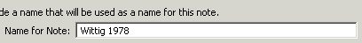
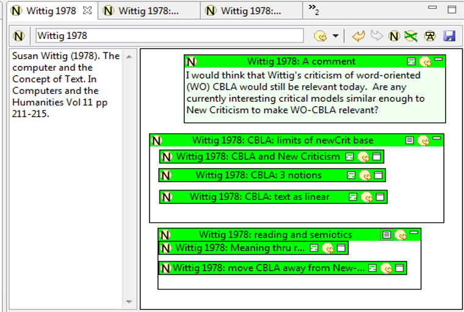

|
|
As you probably know by now, Pliny is a tool to assist you in annotation and note taking, and perhaps it is natural to think of using Pliny to annotate digital resources such as PDF files or web pages -- indeed the first tutorial (Using Pliny with Web-based materials) has already described how this might be done. In this section we will show you how Pliny can be useful even in situations where the material you are reading is not in a digital form so you cannot do digital annotation. As you will shortly see, you can still use use Pliny to record notes about what we are reading. This section will show you how this is done, and along the way, suggest a strategy you might use to make the note taking most efficient.
Pliny also allows you to import notes that you have previously created in a plain text file. This approach might be useful if you were using, say, a hand-held unit to record notes as you read and didn't have the full Pliny system available. See details in the section Importing Data in the materials about the Resource Explorer.
If you are starting up Pliny for the first time you will find that Pliny will have some setting up tasks to do and the startup will take a little longer than usual. If you are using Pliny in its standalone format you will probably next see Pliny's "welcome screen" which you should close once you are ready to begin to use Pliny. When the setup is finished Eclipse will provide you with a screen layout similar to the following:

You have put no data into Pliny yet, so there isn't very much to see (eventually, the Pliny screen will contain many more things than you are seeing here -- a general introduction to issues about how Pliny lays out things on the screen can be found in the help section Getting Started with Pliny). However, Pliny's menu and its tool bars appear in the top area of the Pliny window, where you might expect such things to be (on the Macintosh, the menu appears, instead, in its usual place for the Macintosh, at the top of the screen). Pliny is also designed to start up with Resource Explorer showing down the left side of the window, although because we have done nothing with Pliny yet there really isn't much to see there either.
Let us begin. For the purposes of this tutorial we will assume that you are reading the article "The Computer and the Concept of Text" by Susan Wittig (CHUM Vol 11 pp 211-215). The first stage of scholarly research supported by Pliny is in the recording of notes about what you are reading. We start by creating a bibliography note about the article itself.
Pliny provides several different ways to create notes, depending upon
the context in which you are operating. The very first note in Pliny, however,
is most readily created using the New Note button
 found in the Resource Explorer's
toolbar. When it is pushed the Resource Explorer will display a its New
Note box (called a Wizard in Eclipse terminology):
found in the Resource Explorer's
toolbar. When it is pushed the Resource Explorer will display a its New
Note box (called a Wizard in Eclipse terminology):
In Pliny notes are a kind of resource, and resources must have names so that they can be referenced. The New Note Screen asks us to provide a name for the note we are creating. Since we have decided to use this first note to contain bibliographic information about the piece we are reading, it makes sense to use this new note's name as a brief bibliographic citation -- here this could be a Harvard-style citation: "Wittig 1978".

The resource explorer provides a mechanism whereby any further notes we make will be automatically linked (in ways we will see shortly) to this note. The note to which the other notes are linked is called the "referent". Since we are going to be making notes about what we read from this article next, this is a useful thing to do. To set it up, click the "Make referent?" tick box.
When we are finished reading the Wittig piece and do not wish to automatically link more notes to this one, we can clear the referent operation, or set it to operate to support the next piece we are reading.
You will have noted that there is a third option in the wizard screen -- "Add to Bookmark list?". We will introduce this item later in this tutorial. For now, leave the item unchecked. Thus, after you have provided the name and chosen the referent option click on the "Finish" button in the bottom right corner. Pliny will respond by creating the note you have requested and displaying it in the editor panel. Here you can see the results, with parts of the editor panel labelled below:
Several things have changed on the screen, and it is worthwhile taking a moment to have them pointed out:
The editor pane that was previously grey now contains what is called in Pliny terminology the Note Editor for Wittig 1978. The Noted Editor divides its editor pane into several areas, labelled above. Three of these parts reflect the fact that a note in Pliny has three major parts, (a) a name, (b) some textual content, and (c) a reference area.
Susan Wittig (1978). The computer and the Concept of Text. In Computers and the Humanities Vol 11 pp 211-215.
Since this is a bibliographic entry you will likely feel the urge to try to make the name of the journal display in italics. Surprisingly, perhaps, Pliny makes no provision for such a thing. (If I'd had significantly more time to develop Pliny, support for the formatting of note contents could be provided.) However, Pliny is not, after all, a word processor, and as I think you will see that in time, a long, complex and formatted bit of text in a note is actually a hint that you are using Pliny in ways that you will eventually see as ineffective. So, for now, and admittedly with regret, we move on after acknowledging that we cannot highlight text in a note and that eventually we will find out why it is less of an issue than it might seem.
Note that the boundary between the note body area and the note
annotation area can be moved left or right. To do so place the mouse pointer
over the boundary. The pointer should change to
 . Depress the main mouse
button and drag the boundary to where you want it to be. The new position is
associated with the information Pliny keeps about this note, and the boundary
will be placed where you have put it any time you look at this note in the
future.
. Depress the main mouse
button and drag the boundary to where you want it to be. The new position is
associated with the information Pliny keeps about this note, and the boundary
will be placed where you have put it any time you look at this note in the
future.
After you have typed in the note and moved the boundary between the note and the annotation area a little to the left, you should see something like this:
The first note, which is acting at present like a bibliographic reference to the article, has been created, and we are now ready to start reading the text and recording some of our responses to it.
If you read the previous tutorial (Using
Pliny with Web-based materials) which showed you now to attach notes to a
web page you already know one way to proceed. The Wittig 1978 note we
have just created has a reference area in the right-hand part of its editor
panel and it works in exactly the same way as the reference area does in
Pliny's web browser. Thus, you can simply create new notes in there to record
your observations as you read Wittig's article in exactly the same way you did
in the previous tutorial -- by clicking on the New Note icon ( ) in the Note Editors's Pliny Toolbar,
dragging from this same New Note icon onto the reference area, or pushing the
F5 key as a shortcut, drawing out a new note area and typing your thoughts into
it. There is, however, an alternative mechanism using the "Referent" paradigm
that we set up for this note, and that can be more efficient -- particularly
when, at first, you don't wish to take the time and mental energy to organise
the references to the new notes you create on the screen. In the previous
section of this tutorial we have already set up the "referent" mechanism when
we clicked on the "Make referent" tickbox while we created the Wittig
1978 note. In this next section we make use of the "referent" mechanism we
set up in this way.
) in the Note Editors's Pliny Toolbar,
dragging from this same New Note icon onto the reference area, or pushing the
F5 key as a shortcut, drawing out a new note area and typing your thoughts into
it. There is, however, an alternative mechanism using the "Referent" paradigm
that we set up for this note, and that can be more efficient -- particularly
when, at first, you don't wish to take the time and mental energy to organise
the references to the new notes you create on the screen. In the previous
section of this tutorial we have already set up the "referent" mechanism when
we clicked on the "Make referent" tickbox while we created the Wittig
1978 note. In this next section we make use of the "referent" mechanism we
set up in this way.
As you read this text you will discover things you wish to record in Pliny about it. Suppose that as your first note you wish to record Wittig's observation that traditional computer-based text analysis tools seem to operate within the conceptual framework of the New Criticism -- a point Wittig makes on page 211.
Note that the right hand reference area in the note window is not completely empty this time -- it contains what in Pliny terminology is called a reference -- in this case to the first note we created called "Wittig 1978". Again, this is one of the results of making "Wittig 1978" the referent note. By putting this reference in here Pliny is providing us with a reminder that this note was created as a response to the article described in the reference note "Wittig 1978". We will see later that a second consequence of making Wittig 1978 a referent is that it will also receive a reference object from this note to it -- effectively establishing a connection/reference in both directions.
... and, as one would when working in a word processor, type in the new title to replace it. When we are finished typing in the new title we indicate that we are not planning to make any more changes in the field by clicking the mouse somewhere else on the screen. At that point the note name is changed, and the tab at the top of the screen will be changed as well to reflect this:
As we continue to read Wittig's article we can use the same mechanism we have just described over and over again to put new notes into Pliny -- click on the New Note icon in the Resource Explorer to ask for a new note, edit the title if we wish, and type our thought into the note's content area.
After we have finished reading Wittig's article we will have put in a number of notes. For each note we have created Pliny will have created a new item in the editor pane, and there is likely to be several tabs (as many as will fit) at the top of the editor pane:
In this figure the tab area is small, so only three tabs are showing, but the number 2 after the chevron (">>" -- shown just to the right of the tabs themselves) shows that there are two more items open here that do not have tabs showing. We want to move back to the "Wittig 1978" note we first created. There are several ways to do this. If the name of our first note appeared among the tab list at the top we need merely click on the tab to bring it to the front. If it is not there, however, the best way at present is to click on the chevron item, and click on its name in the list that then appears:
The material associated with the first note is brought to the front, and we can immediately see that changes have been made there by Pliny while we've been typing in our other notes about Wittig:
The first note still has its textual content -- showing in the left area --exactly as we have left it, but we can see that its right-hand reference area now has several objects in it -- in fact there are 5 items there (one for each note we created with Wittig 1978 as the referent), although we can see only 4 at present because of the size of the window. They are here as a consequence of the referentaction we requested near the beginning of this tutorial. When a referent has been specified and is currently in operation, Pliny automatically creates a reference as a link in both directions -- to and from the referent to each new note.
As you might recall, each of these boxes is called a reference in Pliny since the box refers to a note stored in the system. If we look at the first reference at the top of the reference area we can see that it displays the name of the first note we created -- "Wittig 1978: CBLA and New Criticism" -- in a dark green header area, and then some portion of the body of the note in a lighter green area below. Pliny has rather arbitrarily set the size of the entire reference so that, as it turns out, not all the textual content of the note can be seen -- so it also displays a scroll-bar at the right hand end of the lighter green area so that we can scroll the text and see what appears below what is initially visible. There is extensive information about references and reference objects elsewhere in this documentation, but I suggest that if you are reading this tutorial for the first time that you continue reading here instead, and consult it at a later point.
Here the reference is coloured green, but you may remember that Pliny put a reference to Wittig 1978 (coloured blue that time rather than the green we see now) in each note we created. You can think of references as links. Why is this one green, and the others were blue? The colours are managed by Pliny's type system, which is described in more detail elsewhere in these help pages (see the help on the Type Manager). For now, it is sufficient to understand that Pliny knows that the type of reference that points from a note to the source is different in character from that which points from a source to a note, and the colour is different to reflect this.
The header area in this reference has had its width set by Pliny so that it too narrow to see the entire title. If, however, you place the mouse pointer on the item and leave it there for a moment Pliny will show you the full name of the item as a tooltip. Although Pliny has initially laid out the references so that it probably looks to you as if they are represented simply as a list of reference boxes, in fact, the reference area in which they reside is actually a 2 dimensional space, and each reference can be both resized and moved about. Let us resize the first item so that its entire title can be seen. To do this, click in the dark green title area of the first reference area. This will cause this first reference to be selected, and as a consequence, Pliny will display a set of reference handles around the box that borders the reference area. There are 8 selection handled (in the 4 corners, and in the middle of each side), and the 3 on the right side of the reference are identified in this figure:
Extend the width of this selected item by pointing a at the handle box at the centre of the right end, and dragging it further to the right. Pliny will expand the reference box to the size we thus indicate, and if we move it far enough to the right then all the text will be able to be displayed in its contents. Alternatively, we could have expanded the height of the reference area bout we would have found that if we did this the reference area would begin to display over top of the reference area (for Wittig 1978: 3 notions) below it.
Although Pliny has laid out the references to the notes we made about Wittig 1978 as a kind of vertical stack, we can use the 2-dimensional reference area we find here as a way of grouping and organising the notes to help us remember what we thought about the article. In the end, we will recognise the 5 notes we made fit into two broader topics, and we will lay them out in the reference area, and group them in such a way that this is evident. Let us begin to set this up now.
The first thing to note about references is that they can be
minimized. When minimized, Pliny displays them in a smaller box with
only the header area showing. The icon in the header area at the extreme right
end ( ) is the minimization button,
and when clicked causes Pliny to display this reference in its minimized
state:
) is the minimization button,
and when clicked causes Pliny to display this reference in its minimized
state:
When minimized the reference object can still be dragged around in
the reference area, and it's width can be changed -- but its height will always
stay at the size that only displays the header area. Click on the icon at the
extreme end again -- which has now changed to
 -- to change its stack back to the
non-minimized size. You can toggle between minimised and un-minimised state as
often as is useful to you in this way. Minimise a reference when you want it to
take up less space in your reference area. You will no longer be able to see
the note's contents when it is minimised but you can, after all, unminimize it
whenever you like, and as we shall see below, you can also "open" it up
in turn into a new editor (by double-clicking on the icon at the left end of
the object) so that you can see it's textual content and reference area in a
separate editor pane.
-- to change its stack back to the
non-minimized size. You can toggle between minimised and un-minimised state as
often as is useful to you in this way. Minimise a reference when you want it to
take up less space in your reference area. You will no longer be able to see
the note's contents when it is minimised but you can, after all, unminimize it
whenever you like, and as we shall see below, you can also "open" it up
in turn into a new editor (by double-clicking on the icon at the left end of
the object) so that you can see it's textual content and reference area in a
separate editor pane.
Let us take advantage of the minimised form for all the references so that we can make better use of the reference area's space. We could, of course, click on the minimise icon for each reference in turn to minimise them all. To achieve the same result more quickly, first type in the "select all" command (Ctrl-A on a windows machine, Apple-A on a Macintosh) to select all of the 5 references that are currently present. Then, click with the other mouse button (or click with the Ctrl key depressed on a one-button Macintosh mouse button) while the pointer is pointing at any of the then-selected references to see the contextual menu:
The first item displayed here is the "Minimze selected" command. Click on that to choose it, and all the selected references (in this case, all of them since we had just done a "select all" command) will be minimised:

We can still only see four references in this figure, even though we took 5 notes. Minimizing does not cause Pliny to close up the empty space that minimising has created -- the reference area is a two dimensional space rather than a list, after all. Since Pliny has placed the last reference (for the 5th note) below the viewing area it is still down there. Of course if we use the scroll bar to scroll down we'll find it.
As we mentioned above, when we have finished reading Wittig's article we observe our notes fall into two major themes. She starts by observing the New Criticism flavour of much of the computer assisted text analysis tools she was familiar with in 1978. The first of our three notes draw upon that theme. She then puts reading in a semiotics framework and encourages us to think about computer supported criticism tools that might operate in this context instead. The other two of our five notes identify this.
First, we drag the boundary between the note contents (with the bibliographic citation) at the left edge of the editor area and the reference area to the right so that we increase the size of the reference area. Then we click somewhere in the reference area so that all the references stop being selected. Now, we want to drag the references to new locations so that we can use the visual display are to emphasize that they appear in two groups. To drag a reference, point somewhere in the reference's title and drag with the mouse. The reference will follow the pointer around on the screen. Let use this technique to move the 5 references into two separate areas on the screen:
As well as moving the items around we have lengthened some of them so that in all cases the titles we gave to the notes they represent are visible.
Note that we can take advantage of this grouping to move them all together as a set by selecting them all (you can drag out an area around (the area boundary should be started outside of all the items you want to select) a set of references -- a marquee box will appear) to select a set of items that are close together), and once selected, they can be moved as a group by dragging in the way you might expect.
The positioning of the items in the reference space implies a grouping. We can make this more evident by creating two new notes that are associated with the two topics into which our notes fit, and then we can file these references into these notes according to which topic they belong. A note that is used to hold references to other notes is called a containment object in Pliny.
There are two ways to create containment objects, and we describe the two techniques below:
The first way depends on the fact that any note in Pliny can act as a containment object by controlling how Pliny displays it for us. In this first technique we will:
We need to start with the first step, then: to create a note (and
a reference) that appears in the reference space for this note. To
achieve this most readily we should use the New Note icon ( ) associated with this note editor. All the
buttons associated with this editor are found in the right end of the Pliny
toolbar, just below the tabs. The exact buttons may vary in different contents,
but they will look very much like this:
) associated with this note editor. All the
buttons associated with this editor are found in the right end of the Pliny
toolbar, just below the tabs. The exact buttons may vary in different contents,
but they will look very much like this:
There are several buttons here. They are described in detail in
the reference section for the Note editor. For
the moment we will focus on the "New Note" button we find there -- the button
with the New Note icon ( ) Remember
that this New Note icon is not the same button that we see in the
Resource Explorer, although it has the same icon. Whereas both the New Note
icons in the Resource Explorer, and the one here (associated with the note
editor) allow you to create a new note, the one associated with the note editor
also allows you to immediately place a reference to it in the current reference
area as well.
) Remember
that this New Note icon is not the same button that we see in the
Resource Explorer, although it has the same icon. Whereas both the New Note
icons in the Resource Explorer, and the one here (associated with the note
editor) allow you to create a new note, the one associated with the note editor
also allows you to immediately place a reference to it in the current reference
area as well.
After we push the New Note button Pliny is ready to create a new note (and new reference to it) in the reference space for "Wittig 1978". To then create the note and place the reference in the reference area drag out a rectangle there where you want the reference to sit. When you release the button the new note and its reference will appear:
Now, we can change the name of the note we just created to reflect the first of the two topics we found in this paper. To do this double click in the reference object's title area (dark green, and currently showing "Wittig 1978: Note 6") and type in a new name, say: "Wittig 1978: CBLA: limits of NewCrit base".
We are now ready to do the second step we outlined above: to
change this reference area so that it can act as a container for other
notes. As you know by now a note has some content text (showing when open in
the note editor in the left area) and a 2D reference area (showing in the
right). When a reference for a note is first created it shows the title bar and
the note's content text area. Here, Pliny reminds us that this reference area
is displaying the Note's content by coloring it with a light green background.
This newly created note has no content text, so this area is otherwise empty.
We could type in some text here by double-clicking in the bottom part of the
newly created reference object and typing in what we want to say -- we'll do
this later in this tutorial for another note we create. Instead, however, we
wish the bottom area of the reference object to show not the note's textual
content, but instead the 2D reference area associated with it. To make Pliny do
this push the "show reference area" button ( ) in the title bar area of the reference. This
will cause Pliny to show a bit of the 2D reference area of the note "Witting
1978: CBLA: limits of NewCrit base". Since we have just created it a moment
ago, it will also be empty, so the only visual effect will be that the green
background disappears. In addition, the button changes to the "show contents
text button" (
) in the title bar area of the reference. This
will cause Pliny to show a bit of the 2D reference area of the note "Witting
1978: CBLA: limits of NewCrit base". Since we have just created it a moment
ago, it will also be empty, so the only visual effect will be that the green
background disappears. In addition, the button changes to the "show contents
text button" ( ) so that we can
switch back to the textual content area if we wish.
) so that we can
switch back to the textual content area if we wish.
Now that we have the reference/containment area for our new note visible we can carry out the third step described above: drag and drop the three notes related to the theme it represents into that area. We could point at each one in turn and drag it into the open reference area for a new note. Instead, let us do all three all at once: drag a selection retangle around the three notes, point at the title of any one of them, and then in this way drag the three of them into the reference area for our new note in one go. The result will be something like this:

The references for the three notes are now contained within the reference area for note "CBLA: limits of newCrit base". In Pliny this type of change is called re-parenting to reflect the hierarchical nature of what we have just done: the three notes had Wittig 1978 as their parent before, but now they have "Witting 1978: CBLA: limits of NewCrit base" as their parent instead. We have dragged items into the "limits..." note's reference area, we could also drag one or more of them out again if we changed our mind about one of the references. When one sees a resource's reference area displayed like this one can move resources between the contained reference area and the containing reference area at will. However, we won't do this right now.
We can repeat the process for the other two notes -- creating a new thematic note and assigning a name to it, changing its display to show the new note's reference area, and then dragging the two remaining notes into it. There is, however, a faster way to group notes together that is often appropriate: using the Group objects command. Select the two remaining notes that are outside of the "limits of NewCrit base", and click with the other mouse button (or, on a one-button Macintosh mouse, click while holding down the Ctrl key) to see the contextual menu. One of the choices there will be Group Objects:
Choose it. A a result, Pliny will do the whole job for us on its own: first, it will create a new note and a reference to it which covers the area containing the currently selected objects, then it will set it up so that the new note's reference area is visible (it becomes a containment object), and finally it will place the selected notes in it -- effectively setting up the containment all in one go:
Now we can update our containing note's name to reflect what it contains. Double click on the name in the new note's title area to open it for editing, and replace the name with "Wittig 1978: reading and semiotics":
We have restructured the five notes we collected with "Wittig 1978" to remind us that they fall into two major themes -- three in one and two in the other.
Having grouped our original notes in this way we find we want to add
a further observation. Let us add a new note into the reference area, and put
the comment in it. We have added a new note and reference object once before
when we created our first containment object. As you might recall, we can do
this by first clicking on the New Note button ( ) associated with the editor (in this toolbar
-- remember, not the one with the Resource Explorer):
) associated with the editor (in this toolbar
-- remember, not the one with the Resource Explorer):
Alternatively, we can use the F5 keyboards shortcut to tell Pliny that we wish to create a new note in the current reference area. Either way, you can then drag out an area where we want the new note's reference object to appear:
Then we can open both the new note's title and content areas (by double-clicking in each in turn) and type in our comment, resulting in something like:

We now have:
We have now completed our work with Wittig 1978 -- initially recording our observations about the article in 5 notes, then grouping these notes into two larger thematic categories, and finally adding a new note into which we put a kind of overarching comment about Wittig 1978.
Now that we have made a few notes it is time to turn our attention back again to the Resource Explorer. In Eclipse terminology this is a view, and the Pliny screen is displaying it in a view pane that currently happens to be placed on the left side edge of the Pliny screen (although it could be dragged somewhere else in the Pliny window, or even out of the Pliny window altogether to display in a window on its own). It looks currently like this:
We have already noted that as soon as we started creating notes, Pliny placed a ">" beside the Note folder to indicate that it was now holding some notes for us. It is now time to examine how the Resource Explorer organises the objects it holds. (There is more detail about the Resource Explorer's display in its reference section.)
The first thing to note is that the Resource Explorer displays its materials hierarchically with the top level being the kind of resource, and since we have created several notes, the ">" sign indicates that there is something to see inside the "Note" folder. You can see other folders at the top level: one called "Web Browser", "Image" and "PDF/Acrobat", representing the other categories of data that this version of Pliny knows how to work with. Pliny works with things it calls resources, of which "Notes" are just one kind of resource. Another kind of resource is the web page, and when we have web page information managed by Pliny a record of it will appear in the "Web Browser" folder (see the tutorial Using Pliny with Web-based materials for more information about using Pliny to work with web pages as resources). Pliny works out of the box with these kinds of resources, but it can be extended in various ways to work with other kinds of digital data, in which case the number of folders will increase here, for the number of different kinds of resources that Pliny could then handle after it was extended.
You can see that there is also an object called "My Bookmarks" in the Resource Explorer. It is not thought of as a resource type folder, and its purpose and use is briefly described below.
Returning now to the Note folder, if we click on the ">" sign another level will open up. Pliny groups resources by the first letter of their names. Since all the resources we have created so far have names which begin with "W" (for "Wittig"), there will be "W" level with a ">" in front of it (the number in parentheses following the code tells us how many notes with names beginning with W there are -- currently 9). If we click on the "+" in front of the W-folder it will open in turn and we will see all the Notes whose names begin with "W":

It happens that the pane is not wide enough to show the full name of all the notes. However, if we place the cursor pointer over one of the names Pliny will display the full name as a tooltip (here, the cursor sits over the item "Wittig 1978: CBLA: limits of newCrit base"). If we want to see more letters in the names in the pane itself we can simply move the boundary between the Resource Explorer pane and the pane to the right beside it to give the Resource Explorer more room on the screen:
Before we look at how to make use of this list in the Resource Explorer it is useful to take a moment to observe some of the implications of how the notes are organised here. We know that we set up Wittig 1978 as the current referent, and that for this reason a note like Wittig 1978: CBLA: 3 notions was automatically linked to Wittig 1978 -- however, the list the Resource Explorer does not immediately show this connection.
Although we might be tempted to think of the relationship between, say, the 3 notions note and Wittig 1978 as hierarchical (Wittig 1978 owning the other notes), it does not appear that way here, and indeed Pliny relationships are organised so that an hierarchical relationship is only one of several possible interpretations. Shortly we will see ways to view the relationships as hierarchical if we wish. Instead, the hierarchical folder system used in the Resource Explorer works according to rather more basic system. The top level is always a list of the kinds of resources that Pliny currently is managing. The second level is always a grouping of resources, here by initial letter of their name, and the third level is always groups of individual resources. You cannot, then, use the Resource Explorer to explore conceptual hierarchies you have created by using containment (as we did above) between your resources since they are always organised in this three level relatively flat structure. Instead, think of the Explorer providing you with a way to see all your resources entirely independantly of the linking mechanisms you are creating between them, and allowing you to locate one of them by its name.
You can interact with the list here in several ways:
The list under Displayed In shows the resources in which a reference to Wittig 1978 appears. The list under Contains shows the references that Wittig 1978 contains itself. Wittig 1978 appears in the 5 notes shown in the list because, as you recall, Pliny had Wittig 1978 set as the referent when they were being created., and so Pliny automatically put a link from the created note to its referent as a matter of course. As you will recall, we also created two category notes within Wittig 1978 to the group the notes we made as we read the text, and then added a third note to hold a comment about our reading. We can see these two "grouping notes" and the comment in the Contains section for Wittig. Where are the notes they in turn contain? If we open one of these two grouping items under the Contains category (say, Wittig 1978: reading and semiotics) we will see the Displayed In and Contains items for it, and if we opened this Contains item in turn will see the two items we placed in the reading and semiotics note earlier in this tutorial. In this way we can take an hierarchical view of our materials.
We have created our note-taking for Wittig 1978, and so we should remove the referent setting to it, so that any other notes we subsequently create will not be automatically assumed to be drawn from Wittig 1978.
To do this, we can make use of the Resource Explorer's contextual menu. You will probably recall what a contextual menu is: we invoked it twice when working in the Reference Area, and you have probably also seen it with other programs you use. You call up the contextual menu by pushing the other mouse button (on two button mice) or by holding down the Control key while clicking (for Macintosh 1-button mice). It appears were the mouse pointer is. In the Resource Explorer it will look something like this:
Exactly what items appear on the list will depend upon the context in which it is clicked). However, since we currently have an active Referent, the option "Clear the Reference" (highlighted above) will appear. If we click on it "Wittig 1978" will be the referent no longer and will no longer be automatically referenced in any new note we create.
Note that if we reread the same article or continue reading it and find that we want to add more notes we can reinstigate Wittig 1978 as the referent by choosing it in the Resource Explore and then choosing "Set the Referent" from the contextual menu.
As you create more and more notes in Pliny you will find that you will need to organise them so that you can find them again. The Reference Manager's resource folders allow you to access all the resources you have created, but doesn't help you organise them very effectively. Suppose, for example, that you want to keep track of the materials that you have read and for which you have created notes?
One way to facilitate this is to create a note called something like My Readings, and store (in the note's reference area) references to the materials you have read. By putting My Readings as an item accessible from the the bookmarks list you provide, though it, one convenient entry point for your resource collection. The folder My Bookmarks provides a place where we can store high-level note items about the things that we have read that we will want to consult often in the future.
The steps for creating a bookmark item are:
If we open the "My Bookmarks" item in the Resource Explorer we will see the item "My Readings" appearing as a bookmark.

Currently it is the only one, but at a later point in your use of Pliny you may find you wish to add other entry point notes as Bookmarks as well. Note what "My Bookmarks" is for: it provides a place to save useful "entry points" into your collection of Pliny objects. You can think of it as similar to the bookmark factility provided in your web browser.
In summary,then, we here used on option on the Resource Explorer's New Note wizard to add a newly created note called "My Readings" as a bookmark, and we have stored a reference to the first item we have read on this My Readings note. In the future, then, as we do more readings, we can add references to their Pliny items to My Readings, and then use the My Readings note as a way to manage the materials we have been reading. Furthermore, we have added My Readings as our first bookmark, so that we can jump readily to the My Readings item anytime we like.
A final note about My Bookmarks items: although we used a wizard option when creating the My Readings note so that Pliny added the note immediately to the bookmarks list at the same time that it created it, there are also options on the Resource Explorer's contextual menu to add selected resources to the bookmark collection, and to remove items that are already there from the bookmark list.
We have now created a note describing an article we have read. We recorded in Pliny notes that resulted from our reading of this article using the referent paradigm provided by Pliny, and we noted that when the referent mechansim is used Pliny puts links in the form of reference objects in the reference area between the referent and the notes subsequently created. We used the tools in Pliny to organise the note references in the article-note so that they were grouped by topics we were interested in. We examined now notes are organised in the Resource Explorer and noted that although we can use the Explorer to locate all the notes we created, it stores them alphabetically by name and this usually does not represent a conceptual organisation of our notes. Finally, we created a new note entitled My Readings and added it as a Bookmark item in the Resource Manager so that it could act as an entry point into our note collection. Finally, we used drag and drop between the Resource Manager and the annotation area in the My Readings note to add a reference to the article we read to this note.
This marks the end of this tutorial. Our next tutorial, entitled Using Pliny with Images will introduce you to Pliny's image annotation tool and how you will use it. If you have not already done so, however, this might be a good time to review the material in the section Getting started with Pliny which gives you an overview of the areas of the Pliny screen (toolbars and panes in particular) and how Pliny manages this area.
 |
| Pliny Help Pages by John Bradley are licensed under a Creative Commons Attribution-Noncommercial-Share Alike 2.0 UK: England & Wales License. |